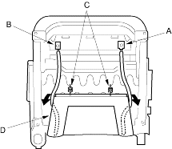
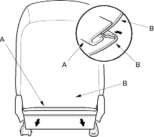
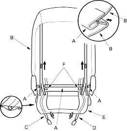

NOTE:
- Take care not to tear the seams or damage the seat covers.
- On the passenger's seat with side airbag, do not touch the OPDS sensor in the seat-back pad and keep it away from oil. Oil can corrode the sensor causing it to fail.
- Put on gloves to protect your hands.
Seat-back Cover
- Remove the front seat (see page 20-229).
- Remove the headrest.
- Driver's seat: If equipped, remove the armrest (see page 20-233).
- With side airbag: From under the seat cushion, detach the side airbag connector clip (A) and on the passenger's seat (for some models), detach the OPDS unit connector clip (B). Release the hook springs (C), then pull the harness guide (D) back. The passenger's seat is shown, the driver's seat is symmetrical except it has no OPDS unit connector.

- Fold the seat-back forward.
- Without side airbag: Release the hook (A) and fold back the seat-back cover (B).

- With side airbag: Release the hooks (A) and unzip the seat-back cover (B). Pull the side airbag harness (C) and the OPDS harness (D) (passenger's seat for some models) out through the harness guides (E) and holes (F) in the seat-back cover.
